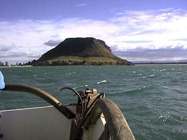

君よ知るや南の国
タウランガ沖の鯛釣り
ニュージーランドはハミルトンからお届けします「君よ知るや南の国」です。
ハミルトンはクリスマスを目前に控え、街はショッピングの人混みでにぎわっています。また、郊外では、牧草地のタンポポがいっせいに白い冠毛がついた実を飛ばしています。その数があまりに多いので、まるで雪が降っているかのように見えます。
さて、今日は、去る三月（日本で言うと九月、初秋）に乗合船で出かけたタウランガ沖の鯛釣りの模様をご紹介いたします。タウランガは、ハミルトンから車で１時間半ほど東にある海辺の小さな町です。複雑に入り組んだ入り江と、その突端にあるマウントマンガヌイという特徴ある山のあるこの町は、気候が温暖で海があり、景色が良いことから最近移り住む人が増えているそうです。
鯛釣りの乗合船は、この町の港から出発し、約一時間半ほど沖合めざして走ります。船は、町のランドマークとなっている、ちょうど擂り鉢を伏せたような形のマンガヌイ山の麓を回りながら沖へ出てゆきます。

この船は専用の釣り船で、約30人ほどが乗れるようですが、この日は約25人が乗り込んでいました。竿と両軸リール、餌も付いて一日40NZ$（約2000円）は、日本の物価から考えるととてもお得な気がします。
沖に出て、マンガヌイ山が見えなくなった頃、船長さんは、魚探を見ながら巧みに船を操り、しかるべきポイントで錨を降ろします。竿は短くてごつい船釣り用、オモリは大きく糸も太く、かなりの大物でも大丈夫そうです。餌は冷凍の魚の切り身やイカなど。
船長の合図でみんないっせいに餌を投げ入れて底まで落とし込み、オモリが底に着いてから二、三回ほどリールを巻いて、鯛のアタリを待ちます。するとあっけないほどすぐにはっきりとしたアタリが伝わり、すかさず合わせると、キュンキュンと心地よい手応えが伝わり、深い海の底から綺麗なピンク色の魚体をした、大きさ30～40cmほどの鯛が上がってきます。群れに当たると、ほとんど入れ食い状態となり、続々とアタリがあります。その日の鯛のアタリは、「クンクンッ」とか「コツン」とかかなり明確なのですが、合わせのタイミングと、掛けてから抜き上げるまでにバラしてしまうのがけっこうあって苦労しました。
まわりのお客さんたちも、次々とよい型の鯛を上げ、船中が歓声に沸きます。なかでも、船室から出て来た船長さんと、二人の船員さん、そして二、三人の常連さんとおぼしき人たちは、連続して、しかも大きいのを上げています。船長さんとは数メートルしか離れていないのですが、こちらが１尾釣る間に四、５尾は釣っています。船長さんの使っている細身で感度の良さそうな竿に目が行きますが、どうも違いはそれだけではなさそうでした。
なにせ竿がごついのと、オモリが巨大なので、40cmぐらいの大きさの鯛はぜんぜん苦労せずに釣り上げられます。と、言うか、魚に比較して仕掛けが大幅に強いので、いささか釣り味に欠けるきらいがあります。（笑） 理想的には、もう少し柔らかめの竿で、オモリも少し小さめを使いたいのですが、大勢の釣り人が乗り込んでおり、潮流も早いので、軽いオモリではオマツリが多くなること、早く沈まないことからそういった道具仕立てになっているのだと推測しました。でも、運がよければ60cmを越えるような大物も釣れるそうなので、油断をせずに、期待をして釣り続けました。
結局その日は10時から３時までで、私は35cmを頭に５尾釣ることができました。他の人も平均して４尾ぐらいは良い型を上げていたようです。船長さんが釣った大物は50cmほどありました。 感心したのは、船長さんはじめお客さん達みんなが、釣り上げた鯛がレギュレーションに定められた大きさに達しているかどうかをきちんと測って、小さな鯛はリリースしていたことです。このレギュレーション（マリーン・レクリエーショナル・フィッシングルール）は、各海域毎に定められており、タウランガ沖合では、鯛釣りの場合、一日の制限尾数は一人９尾、サイズ制限は27cm以上となっています。ちなみに、キングフィッシュのルールは、一日一人３尾、サイズ制限65cm以上です。さらに、鯛やその他の魚を含めて合計した制限尾数が、一日20尾までと決まっています。つまり、鯛を９尾、キングフィッシュを３尾釣ってキープすると、他の魚は８尾だけキープして良いことになります。いささかあっけないほど釣れて鯛の魚影の濃さに驚いたのですが、こうしたルールがあってこそのことだと思います。
また、ちょっと唖然としたのは、船員さんたちが、釣り上げた鯛をシメもせずに南京袋に次々とほうりこんでいたことです。初秋とはいえ日向ではけっこう暑かったので、いささかげんなりしました。今度行くチャンスがあったら醤油とワサビを持っていって速攻でシメた鯛をおろして、刺身で食べようと思います。
最近はニュージーランドでも、スシに次いでサシミが市民権を得つつあるようで、ハミルトンのスーパーマーケットの鮮魚売場には、刺身醤油とチューブ入りのワサビがいつも置いてあるのでうれしいかぎりです。
さて、次回は、オークランド近郊で楽しんだフライフィッシングによる鯛釣りをお届けします。皆様、師走の忙しい時期ですが、お体にお気をつけて、楽しいクリスマスとお正月をお迎え下さい。
君よ知るや南の国 目次へ
サイトマップ
ホームへ
お問い合わせ